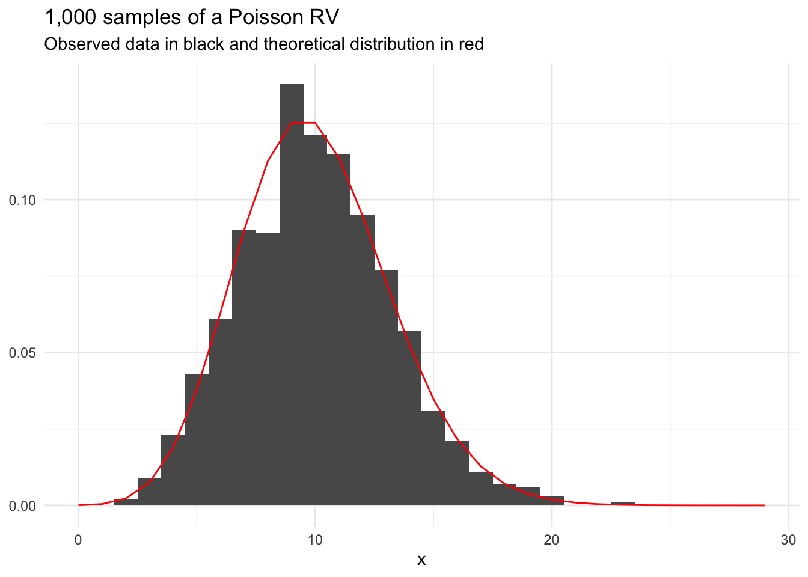
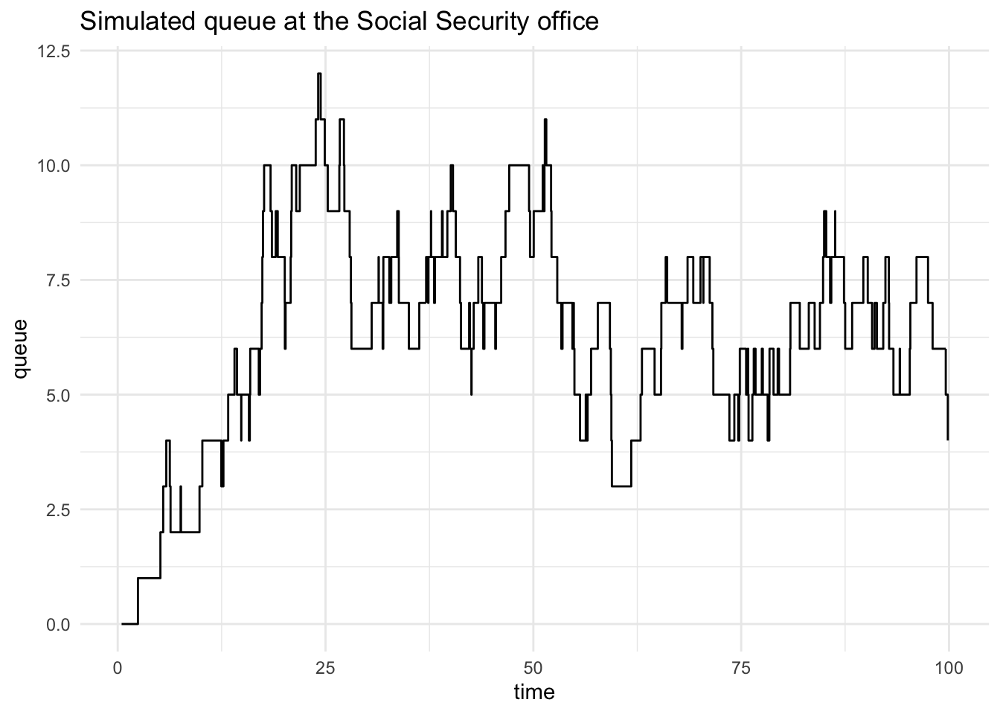

13 Simulation and Sampling
13.1 Review
Population
A population is the entire set of observations of interest.
For example, a population could be everyone residing in France at a point in time. A different population could be every American ages 65 or older.
Parameter
A parameter is a numerical quantity that summarizes a population.
For example, the population mean and population standard deviation describe important characteristics of many populations.
More generally, location parameters, scale parameters, and shape parameters describe many populations.
Random Sample
A random sample is a random subset of a population.
Statistics
A statistic is a numerical quantity that summarizes a sample.
For example, the sample mean and sample standard deviation describe important characteristics of many random samples.
Parameters are to populations what statistics are to samples. The process of learning about population parameters from statistics calculated from samples is called statistical inference.
13.2 Introduction
Simulation and sampling are important tools for statistics and data science. After reviewing/introducing basic concepts about probability theory and probability distributions, we will discuss two important applications of simulation and sampling.
- Monte Carlo simulation: A class of methods where values are repeatedly sampled/simulated from theoretical distributions that model a data generation process. Theoretical distributions, like the normal distribution, have closed-from representations and a finite number of parameters like mean and variance.
- Resampling methods: A class of methods where values are repeatedly sampled from observed data to approximate repeatedly sampling from a population. Bootstrapping is a common resampling method.
Monte Carlo methods and resampling methods have a wide range of applications. Monte Carlo simulation is used by election forecasters to predict electoral outcomes and econometricians to understand the properties of estimators. Resampling methods are used in machine learning and causal inference. Both are fundamental methods for agent-based models including microsimulation.
13.3 Fundamentals of Probability Theory
Random Variable
\(X\) is a random variable if its value is unknown and/or could change.
\(X\) could be the outcome from the flip of a coin or the roll of a die. \(X\) could also be the amount of rain next July 4th.
Experiment
An experiment is a process that results in a fixed set of possible outcomes.
Set
A set is a collection of objects.
Sample Space
A sample space is the set of all possible outcomes for an experiment. We will denote a sample space with \(\Omega\).
Discrete Random Variable
A set is countable if there is a one-to-one correspondence from the elements of the set to some (finite) or all (countably infinite) positive integers (i.e. 1 = heads and 2 = tails).
A random variable is discrete if its sample space is countable (finite or countably infinite).
Continuous Random Variable
A random variable is continuous if its sample space is any value in a \(\mathbb{R}\) (real) interval.
There are infinite possible values in a real interval so the sample space is uncountable.
13.4 Discrete Random Variables
Probability Mass Function
A probability mass function (PMF) computes the probability of an event in the sample space of a discrete random variable.
\[ p(x) = P(X = x) \tag{13.1}\]
where \(0 \le p(x) \le 1\) and \(\sum_{x \in \Omega} p(x) = 1\)
Now we can make statements like \(P(X = a)\). For example, \(P(X = 3) = \frac{1}{6}\).
13.4.1 Bernoulli Distribution
A Bernoulli random variable takes on the value \(1\) with probability \(p\) and \(0\) with probability \(1 - p\). It is often used to represent coins. When \(p = \frac{1}{2}\) we refer to the coin as “fair”.
We show that a random variable is Bernoulli distributed with
\[ X \sim Ber(p) \tag{13.2}\]
The PMF of a Bernoulli random variable is
\[ p(x) = \begin{cases} 1 - p &\text{ if } x = 0 \\ p &\text{ if } x = 1 \end{cases} = p^x(1 - p)^{1-x} \tag{13.3}\]
13.4.2 Binomial Distribution
A binomial random variable is the number of events observed in \(n\) repeated Bernoulli trials.
We show that a random variable is Bernoulli distributed with
\[ X \sim Bin(n, p) \tag{13.4}\]
The PMF of a Bernoulli random variable is
\[ p(x) = {n \choose x} p^x(1 - p)^{n - x} \tag{13.5}\]
We can calculate the theoretical probability of a given draw from a binomial distribution using this PDF. For example, suppose we have a binomial distribution with \(10\) trials and \(p = \frac{1}{2}\). The probability of drawing exactly six \(1\)s and four \(0\)s is
\[ p(X = 6) = \frac{10!}{6!4!} 0.5^6(1 - 0.5)^{10 - 6} \approx 0.2051 \tag{13.6}\]
We can do similar calculations for each value between \(0\) and \(10\).
We can also take random draws from the distribution. Figure 13.2 shows 1,000 random draws from a binomial distribution with 10 trials and p = 0.5. The theoretical distribution is overlaid in red.
Code
tibble(
x = rbinom(n = 1000, size = 10, prob = 0.5)
) |>
ggplot(aes(x)) +
geom_histogram(aes(y = after_stat(count / sum(count)))) +
scale_x_continuous(breaks = 0:10) +
geom_point(data = tibble(x = 0:10, y = map_dbl(0:10, dbinom, size = 10, prob = 0.5)),
aes(x, y),
color = "red") +
labs(
title = "1,000 samples of a binomial RV",
subtitle = "Size = 10; prob = 0.5",
y = NULL
) 
Sampling Error
Sampling error is the difference between sample statistics (estimates of population parameters) and population parameters.
The difference between the red dots and black bars in Figure 13.2 is caused by sampling error.
13.4.3 Distributions Using R
Most common distributions have R functions to
- calculate the density of the pdf/pmf for a specific value
- calculate the probability of observing a value less than \(a\)
- calculate the value associated with specific quantiles of the pdf/pmf
- randomly sample from the probability distribution
Let’s consider a few examples:
The following answers the question: “What is the probability of observing 10 events in 10 trials when p = 0.5?”
The following answers the question: “What’s the probability of observing 3 or fewer events in 10 trials when p = 0.5”
The following answers the question: “What is a 10th percentile number of events to see in 10 trials when p = 0.5?
The following randomly draw ten different binomially distributed random variables.
Pseudo-random numbers
Computers use pseudo-random numbers to generate samples from probability distributions. Modern pseudo-random samplers are very random.
Use set.seed() to make pseudo-random sampling reproducible.
13.4.4 Poisson Random Variable
A poisson random variable is the number of events that occur in a fixed period of time. For example, a poisson distribution can be used to model the number of visits in an emergency room between 1AM and 2AM.
We show that a random variable is poisson-distributed with
\[ X \sim Pois(\lambda) \tag{13.7}\]
The parameter \(\lambda\) is both the mean and variance of the poisson distribution. The PMF of a poisson random variable is
\[ p(x) = \frac{\lambda^x e^{-\lambda}}{x!} \tag{13.8}\]
Figure 13.3 shows 1,000 draws from a poisson distribution with \(\lambda = 10\).
Code
set.seed(20200905)
tibble(
x = rpois(1000, lambda = 10)
) |>
ggplot(aes(x)) +
geom_histogram(aes(y = after_stat(count / sum(count)))) +
scale_x_continuous(limits = c(0, 29)) +
stat_function(fun = dpois, n = 30, color = "red", args = list(lambda = 10)) +
labs(
title = "1,000 samples of a Poisson RV",
subtitle = "Observed data in black and theoretical distribution in red",
y = NULL
) Warning: Removed 2 rows containing missing values or values outside the scale range
(`geom_bar()`).

13.4.5 Categorical Random Variable
We can create a custom discrete probability distribution by enumerating the probability of each event in the sample space. For example, the PMF for the roll of a fair die is
\[ p(x) = \begin{cases} \frac{1}{6} & \text{if } x = 1\\ \frac{1}{6} & \text{if } x = 2\\ \frac{1}{6} & \text{if } x = 3\\ \frac{1}{6} & \text{if } x = 4\\ \frac{1}{6} & \text{if } x = 5\\ \frac{1}{6} & \text{if } x = 6 \end{cases} \tag{13.9}\]
This PMF is visualized in Figure 13.1. We can sample from this PMF with
We can also sample with probabilities that differ for each event:
When \(\lambda\) is sufficiently large, the normal distribution is a reasonable approximation of the poisson distribution.
13.5 Continuous Random Variables
Probability Density Function (PDF)
A probability density function is a non-negative, integrable function for each real value \(x\) that shows the relative probability of values of \(x\) for an absolutely continuous random variable \(X\).
We note PDF with \(f_X(x)\).
Cumulative Distribution Function (CDF)
A cumulative distribution function (cdf) shows the probability of a random variable \(X\) taking on any value less than or equal to \(x\).
We note CDF with \(F_X(x) = P(X \le x)\)
Here is the PDF for a standard normal random variable:
Code
If we integrate the entire function we get the CDF.
Cumulative Density Function (CDF): A function of a random variable \(X\) that returns the probability that the value \(X < x\).
Code

13.5.1 Uniform Distribution
Uniform random variables have equal probability for every value in the sample space. The distribution has two parameters: minimum and maximum. A standard uniform random has minimum = 0 and maximum = 1.
We show that a random variable is uniform distributed with
\[ X \sim U(a, b) \tag{13.10}\]
The PDF of a uniform random variable is
\[ f(x) = \begin{cases} \frac{1}{b - a} & \text{if } x \in [a, b] \\ 0 & \text{otherwise} \end{cases} \tag{13.11}\]
Standard uniform random variables are useful for generating other random processes and imputation.
Code
set.seed(20200904)
tibble(
x = runif(1000)
) |>
ggplot(aes(x)) +
geom_histogram(aes(y = after_stat(density))) +
stat_function(fun = dunif, n = 101, color = "red") +
labs(
title = "1,000 samples of a standard uniform RV",
subtitle = "Observed data in black and theoretical distribution in red",
y = NULL
) 13.5.2 Normal Distribution
The normal distribution is the backbone of statistical inference because of the central limit theorem.
We show that a random variable is normally distributed with
\[ X \sim N(\mu, \sigma) \tag{13.12}\]
The PDF of a normally distributed random variable is
\[ f(x) = \frac{1}{\sigma\sqrt{2\pi}} \exp\left[-\frac{1}{2}\left(\frac{x - \mu}{\sigma}\right) ^ 2\right] \tag{13.13}\]
Fundamental Probability Formula for Intervals
The probability that an absolutely continuous random variable takes on any specific value is always zero because the sample space is uncountable. Accordingly, we express the probability of observing events within a region for absolutely continuous random variables.
If \(X\) has a PDF and \(a < b\), then
\[ P(a \le X \le b) = P(a \le X < b) = P(a < X \le b) = P(a < X < b) = \int_a^bf(x)dx = F_X(b) - F_X(a) \tag{13.14}\]
The last portion of this inequality is fundamental to working with continuous probability distributions and is the backbone of much of any intro to statistics course. For example, the probability, \(P(X < 0)\) is represented by the blue region below.
Code
Observe how the normal distribution becomes a better approximation for Student’s t-distribution when the degrees of freedom increases.
13.5.3 Exponential Distribution
An exponential random variable is the wait time between events for a poisson random variable. It is useful for modeling wait time. For example, an exponential distribution can be used to model the wait time between arrivals in an emergency room between 1AM and 2AM. It has one parameter: rate (\(\lambda\)).
We show that a random variable is exponentially distributed with
\[ X \sim Exp(\lambda) \tag{13.15}\]
The PDF of an exponential random variable is
\[ f(x) = \lambda\exp(-\lambda x) \tag{13.16}\]
13.5.4 Other Distributions
- Geometric RV: Number of Bernoulli trials up to and including the \(1^{st}\) event
- Negative Binomial RV: Number of Bernoulli trials up to and including the \(r^{th}\) event
- Gamma RV: Time until the \(\alpha\) person arrives
13.6 Parametric Density Estimation
A key exercise in statistics is selecting a probability distribution to represent data and then learning the parameters of probability distributions from the data. The process is often called model fitting.
We are focused on parametric density estimation. Later, we will focus on nonparameteric density estimation. This section will focus on frequentist inference of population parameters from observed data. Later, we will adopt a Bayesian approach to inference.
13.6.1 Maximum Likelihood Estimation
All of the probability distributions we have observed have a finite number of parameters. Maximum likelihood estimation is a common method for estimating these parameters.
The general process is
- Pick the probability distribution that fits the observed data.
- Identify the finite number of parameters associated with the probability distribution.
- Calculate the parameters that maximize the probability of the observed data.
Likelihood
Let \(\vec{x}\) be observed data and \(\theta\) be a parameter or parameters from a chosen probability distribution. The likelihood is the joint probability of the observed data conditional on values of the parameters.
The likelihood of discrete data is
\[ L(\theta) = P(\vec{x}|\theta) = \Pi_{i = 1}^n p(x_i|\theta) \tag{13.17}\]
The likelihood of continuous data is
\[ L(\theta) = P(\vec{x}|\theta) = \Pi_{i = 1}^n f(x_i|\theta) \tag{13.18}\]
Maximum Likelihood Estimation
Maximum likelihood estimation is a process for estimating parameters for a given distribution that maximizes the log likelihood.
In other words, MLEs find the estimated parameters that maximize the probability of observing the observed set of data.
We won’t unpack how to derive the maximum likelihood estimators1 but it is easy to look up most MLEs.
Binomial distribution MLEs
Suppose we have a sample of data \(x_1, ..., x_m\). If the number of trials \(n\) is already known, then \(p\) is the only parameter for the binomial distribution that needs to be estimated. The MLE for \(p\) is \(\hat{p} = \frac{\sum_{i = 1}^n x_i}{mn}\).
Suppose we observe the following vector of observed data. Next, we calculate \(\hat{p}\).
Normal distribution MLEs
\(\mu\) and \(\sigma\) are the parameters of a normal distribution. The MLEs for a normal distribution are \(\hat\mu = \frac{1}{n}\sum_{i = 1}^n x_i = \bar{x}\) and \(s^2 = \frac{1}{n} \sum_{i = 1}^n (x_i - \bar{x})^2\).2
Suppose we observe the following vector of observed data. Next, we calculate \(\hat\mu = \frac{1}{n}\sum_{i = 1}^n x_i\) and \(\hat\sigma^2 = \frac{1}{n}\sum_{i = 1}^n (x_i - \bar{x})^2\).
Exponential distribution MLEs
\(\lambda\) is the only parameter of an exponential distribution. The MLE for an exponential distribution is \(\hat\lambda = \frac{1}{\bar{x}}\).
Suppose we observe the following vector of observed data. Next, we calculate \(\frac{1}{\bar{x}}\).

13.7 Multivariate Random Variables
We’ve explored univariate or marginal distributions thus far. Next, we will focus on multivariate distributions.
Multivariate Distribution
A multivariate distribution is a probability distribution that shows the probability (discrete) or relative probability (continuous) of more than one random variable.
Multivariate distributions require describing characteristics of random variables and the relationships between random variables.
13.7.1 Multivariate Normal Distribution
The multivariate normal distribution is a higher-dimensional version of the normal distribution.
Instead of a single mean and a single variance, the \(k\)-dimensional multivariate normal distribution has a vector of means of length \(k\) and a \(k\)-by-\(k\) variance-covariance matrix3. The vector describes the central tendencies of each dimension of the multivariate distribution and the matrix describe the variance of the distributions and relationships between the distributions.
We show that a random vector is multivariate normally distributed with
\[ \vec{X} \sim \mathcal{N}(\vec\mu, \boldsymbol\Sigma) \tag{13.19}\]
The PDF of a multivariate normally distributed random variable is
\[ f(x) = (2\pi)^{-k/2}det(\boldsymbol\Sigma)^{-1/2}\exp\left(-\frac{1}{2}(\vec{x} - \vec\mu)^T\boldsymbol\Sigma^{-1}(\vec{x} - \vec\mu)\right) \tag{13.20}\]
Functions for working with multi-variate normal distributions from library(MASS). Figure 13.4 shows three different random samples from 2-dimensional multivariate normal distributions.
Sigma1 <- matrix(c(1, 0.8,
0.8, 1),
nrow = 2,
byrow = TRUE)
mvrnorm(n = 1000, mu = c(0, 0), Sigma = Sigma1) |>
as_tibble() |>
ggplot(aes(V1, V2)) +
geom_point()Warning: The `x` argument of `as_tibble.matrix()` must have unique column names if
`.name_repair` is omitted as of tibble 2.0.0.
ℹ Using compatibility `.name_repair`.Sigma2 <- matrix(c(1, 0.2,
0.2, 1),
nrow = 2,
byrow = TRUE)
mvrnorm(n = 1000, mu = c(0, 0), Sigma = Sigma2) |>
as_tibble() |>
ggplot(aes(V1, V2)) +
geom_point()
Sigma3 <- matrix(c(1, -0.8,
-0.8, 1),
nrow = 2,
byrow = TRUE)
mvrnorm(n = 1000, mu = c(0, 0), Sigma = Sigma3) |>
as_tibble() |>
ggplot(aes(V1, V2)) +
geom_point()
13.8 Monte Carlo Methods
Simulation methods, including Monte Carlo simulation, are used for policy analysis:
- FiveThirtyEight and the New York Times use Monte Carlo simulation to predict the outcomes of elections.
- The Social Security Administration uses microsimulation to evaluate the distributional impact of Social Security reforms.
- The Census Bureau uses simulation to understand the impact of statistical disclosure control on released data.
- Econometricians and statisticians use Monte Carlo simulation to demonstrate the properties of estimators.
We can make probabilistic statements about common continuous random variables because their PDFs are integrable or at least easy enough to approximate with lookup tables. We can make probabilistic statements about common discrete random variables with summation.
But we often want to make probabilistic statements about uncommon or complex probability distributions. Maybe the probability distribution of the random variable doesn’t have a tractable integral (i.e. the area under the curve can’t practically be computed). Or maybe there are too many potential outcomes (e.g. rays of light emitting from a light bulb in the Marble Science video linked at the top).
Monte Carlo: A Monte Carlo method estimates a deterministic quantity using stochastic (random) sampling.
Monte Carlo but easier this time: A Monte Carlo method takes hundreds or thousands of independent samples from a random variable or variables and then approximates fixed population quantities with summaries of those draws. The quantities could be population parameters like a population mean or probabilities.
Monte Carlo methods have three major applications:
- Sampling – Monte Carlo simulation allows for sampling from complex probability distributions. The samples can be used to model real-world events (queues), to model outcomes with uncertain model inputs (election modeling), to generate fake data with known parameters to evaluate statistical methods (model selection when assumptions fail), and to draw from the posteriors of Bayesian models.
- Numerical integration – Integration, as noted above, is important to calculating probabilities and ultimately calculating quantities like expected value or the intervals. Monte Carlo methods can approximate multidimensional integrals that will never be directly solved by computers or simplify estimating probabilities when there are uncountably many potential outcomes (Solitaire).
- Optimization – Monte Carlo methods can be used for complex optimization. We will not focus on optimization.
Let’s explore some examples:
13.8.1 Example 1: Coin Tossing
We can calculate the proportion of tosses of a fair coin that we expect to turn up heads by finding the expected value of the binomial distribution and dividing by the number of tosses. But suppose we can’t… Or maybe we wish to confirm our calculations with simulations…
Let’s try repeated sampling from a binomial distribution to approximate this process:
#' Count the proportion of n tosses that turn up heads
#'
#' @param n An integer for the number of tosses
#'
#' @return The proportion of n tosses that turn up heads
#'
count_heads <- function(n) {
# toss the fair coin n times
coin_tosses <- rbinom(n = n, size = 1, prob = 0.5)
coin_tosses <- if_else(coin_tosses == 1, "heads", "tails")
# calculate the proportion of heads
prop_heads <- mean(coin_tosses == "heads")
return(prop_heads)
}Let’s toss the coin ten times.
Ok, we got 0.3, which we know isn’t close to the expected proportion of 0.5. What if we toss the coin 1 million times.
Ok, that’s more like it.
\[\cdot\cdot\cdot\]
Monte Carlo simulation works because of the law of large numbers. The law of large numbers states that the probability that the average of trials differs from the expected value converges to zero as the number of trials goes to infinity.
Monte Carlo simulation basically repeats the ideas behind frequentist inferential statistics. If we can’t measure every unit in a population then we can sample a representative population and estimate parameters about that population.
The keys to Monte Carlo simulation are randomness and independent and identically distributed sampling (i.i.d.).
13.8.2 Example 2: Bootstrap Sampling
On average, a bootstrap sample includes about 63% of the observations from the data that are sampled. This means that an individual bootstrap sample excludes 37% of the observations from the source data!
So if we bootstrap sample from a vector of length 100, then \(\frac{63}{100}\) values will end up in the bootstrap sample on average and \(\frac{37}{100}\) of the values will be repeats on average.
We can explore this fact empirically with Monte Carlo simulation using repeated samples from a categorical distribution. We will use sample().
#' Calculate the proportion of unique values from a vector of integers included
#' in a bootstrap sample
#'
#' @param integers A vector of integers
#'
#' @return The proportion of integers included in the bootstrap sample
#'
count_uniques <- function(integers) {
# generate a bootstrap sample
samples <- sample(integers, size = length(integers), replace = TRUE)
# calculate the proportion of unique values from the original vector
prop_unique <- length(unique(samples)) / length(integers)
return(prop_unique)
}Let’s bootstrap sample 100,000 times.
Finally, calculate the mean proportion and estimate the expected value.
We can also calculate a 95% confidence interval using the bootstrap samples.
13.8.3 Example 3: \(\pi\)
Consider one of the examples from Marble Science: Monte Carlo Simulation. Imagine we don’t know \(\pi\) but we know that the equation for the area of a square is \(r ^ 2\) and the equation for the area of a circle is \(\pi r ^ 2\). If we know the ratio of the areas of the circle and the square, then we can solve for \(\pi\).
\[ \frac{\text{Area of Cirle}}{\text{Area of Square}} = \frac{\pi r ^ 2}{r ^ 2} = \pi \tag{13.21}\]
This is simply solved with Monte Carlo simulation. Randomly sample a bivariate uniform random variables and count how frequently the values are inside of the square or inside the circle.
expand_grid(
x = seq(0, 4, 0.1),
y = seq(0, 2, 0.1)
) |>
ggplot() +
ggforce::geom_circle(aes(x0 = 2, y0 = 1, r = 1), fill = "blue", color = NA) +
geom_rect(aes(xmin = 0, xmax = 1, ymin = 0, ymax = 1), fill = "red", color = NA) +
geom_rect(aes(xmin = 0, xmax = 3, ymin = 0, ymax = 2), fill = NA, color = "black") +
coord_fixed()Warning in ggforce::geom_circle(aes(x0 = 2, y0 = 1, r = 1), fill = "blue", : All aesthetics have length 1, but the data has 861 rows.
ℹ Did you mean to use `annotate()`?Warning in geom_rect(aes(xmin = 0, xmax = 1, ymin = 0, ymax = 1), fill = "red", : All aesthetics have length 1, but the data has 861 rows.
ℹ Did you mean to use `annotate()`?Warning in geom_rect(aes(xmin = 0, xmax = 3, ymin = 0, ymax = 2), fill = NA, : All aesthetics have length 1, but the data has 861 rows.
ℹ Did you mean to use `annotate()`?number_of_samples <- 2000000
# sample points in a rectangle with x in [0, 3] and y in [0, 2]
set.seed(20210907)
samples <- tibble(
x = runif(number_of_samples, min = 0, max = 3),
y = runif(number_of_samples, min = 0, max = 2)
)
# calculate if (x, y) is in the circle, the square, or neither
samples <- samples |>
mutate(
in_square = between(x, 0, 1) & between(y, 0, 1),
in_circle = (x - 2) ^ 2 + (y - 1) ^ 2 < 1
)
# calculate the proportion of samples in each shape
prop_in_shapes <- samples |>
summarize(
prop_in_square = mean(in_square),
prop_in_circle = mean(in_circle)
)
# calculate the ratio
prop_in_shapes |>
mutate(prop_in_circle / prop_in_square) |>
print(digits = 3)# A tibble: 1 × 3
prop_in_square prop_in_circle `prop_in_circle/prop_in_square`
<dbl> <dbl> <dbl>
1 0.166 0.524 3.15The answer approximates \(\pi\)!
13.8.4 Example 4: Simple Linear Regression
The goal of statistical inference is to use data, statistics, and assumptions to infer parameters and probabilities about a population. Typically we engage in point estimation and interval estimation.
Sometimes it is useful to reverse this process to understand and confirm the properties of estimators. That means starting with known population parameters, simulating hundreds or thousands of samples from that population, and then observing point estimates and interval estimates over those samples.
Linear Regression Assumptions
- The population model is of the linear form \(y = \beta_0 + \beta_1 x + \epsilon\)
- The estimation data come from a random sample or experiment
- \(\epsilon_i \sim N(0, \sigma^2)\) independently and identically distributed (i.i.d.)
- \(x\) has variance and there is no perfect collinearity in \(x\)
Statistics
If we have one sample of data, we can estimate points and intervals with the following estimators:
The residual standard error is
\[ \hat\sigma = \frac{\sum e_i^2}{(n - 2)} \tag{13.22}\]
The estimate of the slope is
\[ \hat\beta_1 = \frac{\sum(x_i - \bar{x})(y_i - \bar{y})}{\sum(x_i - \bar{x})^2} \tag{13.23}\]
The standard error of the estimate of the slope, which can be used to calculate t-statistics and confidence intervals, is
\[ \hat{SE}(\hat\beta_1) = \sqrt\frac{\hat\sigma^2}{\sum(x_i -\bar{x})^2} \tag{13.24}\]
The estimate of the intercept term is
\[ \hat\beta_0 = \bar{y} - \hat\beta_1\bar{x} \tag{13.25}\]
The standard error of the intercept is
\[ \hat{SE}(\hat{\beta_0}) = \sqrt{\hat\sigma^2\left[\frac{1}{n} + \frac{\bar{x}^2}{\sum(x_i - \bar{x})^2}\right]} \tag{13.26}\]
Monte Carlo Simulation
Consider a simple linear regression model with the following population model:
\[y = 5 + 15x + \epsilon\]
We can calculate the above statistics over repeated sampling and confirm their asymptotic properties with Monte Carlo simulation.
First, create 1,000 random samples from the population.
Next, estimate a simple linear regression model for each draw of the population. This step includes calculating \(\hat\sigma\), \(\hat\beta_1\), \(\hat\beta_0\), \(\hat{SE}(\hat\beta_1)\), and \(\hat{SE}(\hat\beta_0)\).
Next, we extract the coefficients and confidence intervals.
Let’s look at estimates of the residual standard error. The center of the distribution closely matches the population standard deviation of the error term.
model_metrics <- map_df(
.x = estimated_models,
.f = glance
)
model_metrics |>
ggplot(aes(sigma)) +
geom_histogram() +
labs(title = "Plot of the estimated residual standard errors")`stat_bin()` using `bins = 30`. Pick better value with `binwidth`.Let’s plot the coefficients. The centers approximately match the population intercept of 5 and slope of 15.
coefficients |>
ggplot(aes(estimate)) +
geom_histogram() +
facet_wrap(~term, scales = "free_x") +
labs(title = "Coefficients estimates across 10,000 samples")`stat_bin()` using `bins = 30`. Pick better value with `binwidth`.The standard deviation of the coefficients also matches the standard errors.
\[\hat{SE}(\hat\beta_1) = \sqrt\frac{\hat\sigma^2}{\sum(x_i -\bar{x})^2} = \sqrt\frac{10^2}{40,000} = 0.05\]
\[\hat{SE}(\hat{\beta_0}) = \sqrt{\hat\sigma^2\left[\frac{1}{n} + \frac{\bar{x}^2}{\sum(x_i - \bar{x})^2}\right]} = \sqrt{10^2\left[\frac{1}{10,000} + 0\right]} = 0.1\]
# A tibble: 2 × 3
term `mean(estimate)` `sd(estimate)`
<chr> <dbl> <dbl>
1 (Intercept) 5.00 0.100
2 x 15.0 0.0482Let’s look at how often the true parameter is inside the 95% confidence interval. It’s close although not exactly 95%.
coefficients |>
filter(term == "x") |>
summarize(ci_contain_beta = mean(conf.low <= 15 & conf.high >= 15))# A tibble: 1 × 1
ci_contain_beta
<dbl>
1 0.959coefficients |>
filter(term == "(Intercept)") |>
summarize(ci_contain_beta = mean(conf.low <= 5 & conf.high >= 5))# A tibble: 1 × 1
ci_contain_beta
<dbl>
1 0.9513.8.5 Example 5: Queuing Example
Suppose we have a queue at a Social Security field office. Let \(t\) be time. When the office opens, \(t = 0\) and the queue is empty.
Let, \(T_i\) be the interarrival time and \(T_i \sim exp(\lambda_1)\)
Let, \(S_i\) be the service time time and \(S_I \sim exp(\lambda_2)\)
From these two random variables, we can calculate the arrival times, departure times, and wait times for each customer.
- The arrival times are the cumulative sum of the interarrival times.
- The wait times are zero if a person arrives after the person before them and the difference between the prior person’s departure and the current person’s arrival otherwise.
- The departure time is arrival time plus the wait time plus the service time.
# A tibble: 100 × 5
interarrival_time arrival_time service_time wait_time departure_time
<dbl> <dbl> <dbl> <dbl> <dbl>
1 0.467 0.467 5.80 0 6.27
2 1.97 2.43 0.0892 3.83 6.36
3 2.70 5.13 1.26 1.22 7.61
4 0.335 5.47 4.85 2.14 12.5
5 0.372 5.84 1.89 6.62 14.3
6 1.72 7.56 0.507 6.78 14.9
7 2.28 9.84 0.932 5.01 15.8
8 0.339 10.2 1.18 5.61 17.0
9 2.54 12.7 1.42 4.25 18.4
10 0.572 13.3 0.157 5.10 18.5
# ℹ 90 more rowsflow <- tibble::tibble(
time = c(queue$arrival_time, queue$departure_time),
type = c(rep("arrival", length(queue$arrival_time)),
rep("departure", length(queue$departure_time))),
change = c(rep(1, length(queue$arrival_time)), rep(-1, length(queue$departure_time))),
) |>
arrange(time) |>
filter(time < 100) |>
mutate(queue = cumsum(change) - 1)
flow |>
ggplot(aes(time, queue)) +
geom_step() +
labs(title = "Simulated queue at the Social Security office")
This is interesting, but it’s still only one draw from a Monte Carlo simulation. What if we are interested in the distribution of wait times for the fifth customer?
#' Generate wait times at the queue
#'
#' @param person_number An integer for the person of interest
#' @param iterations An integer for the number of Monte Carlo iterations
#' @param t A t for the maximum time
#'
#' @return A vector of wait times
#'
generate_waits <- function(person_number, iterations, t) {
wait_time <- vector(mode = "numeric", length = iterations)
for (i in seq_along(wait_time)) {
wait_time[i] <- generate_queue(t = t, lambda = 1, mu = 1)$wait_time[person_number]
}
return(wait_time)
}
set.seed(20200908)
wait_time <- generate_waits(person_number = 5, iterations = 10000, t = 50)
mean(wait_time)[1] 1.464371 2.5% 50% 97.5%
0.0000000 0.9222193 5.8742015 13.8.6 More examples of Monte Carlo simulation
- fivethirtyeight 2020 election forecast use
- U.S. Census Bureau simulation of data collection operations
Markov Chain Monte Carlo
Bayesian statisticians estimate posterior distributions of parameters that are combinations of prior distributions and sampling distributions. Outside of special cases, posterior distributions are difficult to identify. Accordingly, most Bayesian estimation uses an extension of Monte Carlo simulation called Markov Chain Monte Carlo or MCMC.
13.8.7 One Final Note
Monte Carlo simulations likely underestimate uncertainty. Monte Carlo simulations only capture aleatoric uncertainty and they don’t capture epistemic uncertainty.
Aleatoric uncertainty: Uncertainty due to probabilistic variety
Epistemic uncertainty: Uncertainty due to a lack of knowledge
In other words, Monte Carlo simulations estimates assume the model is correct, which is almost certainly never fully true. Be transparent. Be humble.
13.9 Sampling from Observed Data
Until now, we’ve only discussed sampling from closed-form theoretical distributions. We also called this process simulation. There are many applications where we may want to sample from observed data.
We can break these methods into two general approaches:
- Sampling
- Resampling
13.9.1 Sampling
Sampling
Sampling is the process of selecting a subset of data. Probability sampling is the process of selecting a sample when the selection uses randomization.
Sampling has many applications:
- Reducing costs for the collection of data
- Implementing machine learning algorithms
- Resampling
13.9.2 Resampling
Resampling
Resampling is the process of repeatedly sampling from observed data to approximate the generation of new data.
There are at least three popular resampling methods:
- Cross Validation: Partitioning the data and shuffling the partitions to understand the accuracy of predictive models.
- Bootstrap sampling: Repeated sampling with replacement to estimate sampling distributions from observed data.
- Jackknife: Leave-one-out sampling to estimate the bias and standard error of a statistic.
We focused on cross-validation for machine learning and predictive modeling in data science for public policy. We will use this approach again for predictive modeling.
We will also learn about bootstrap sampling when we discuss nonparametric statistics.
(Casella and Berger 2002) offers a robust introduction to deriving maximum likelihood estimators.↩︎
Note that the MLE for variance is biased.↩︎
Correlation may be more familiar than covariance. Sample correlation is standardized sample covariance. \(Corr(\vec{x}, \vec{y}) = \frac{Cov(\vec{x}, \vec{y})}{S_{\vec{x}}S_{\vec{y}}}\). Correlation is also between -1 and 1 inclusive. Covariance can take on any real value.↩︎